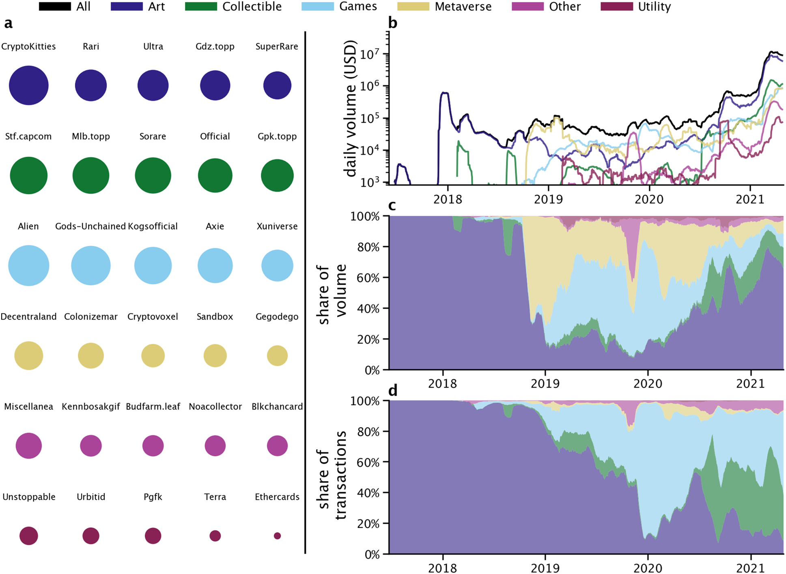
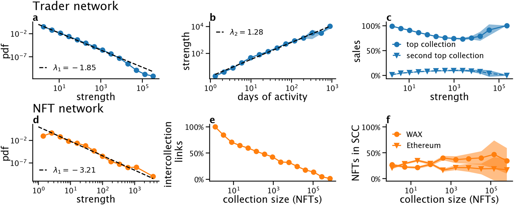
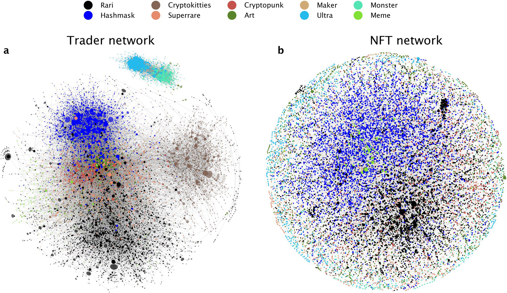
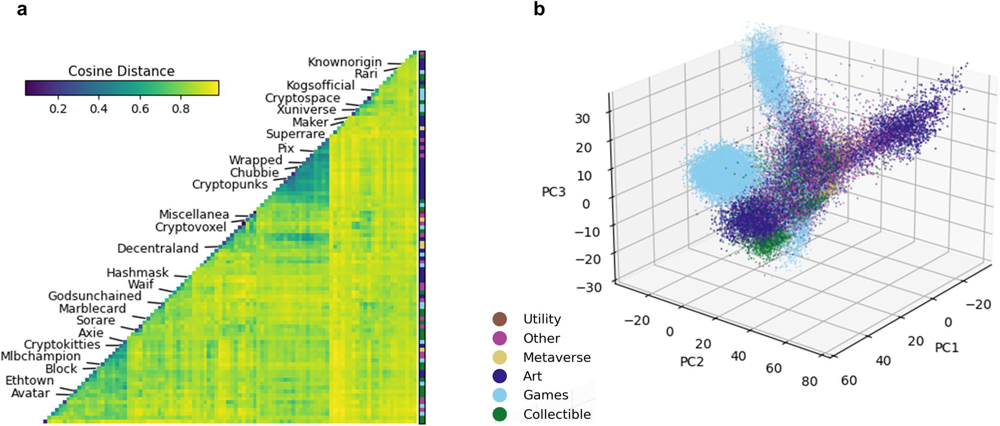
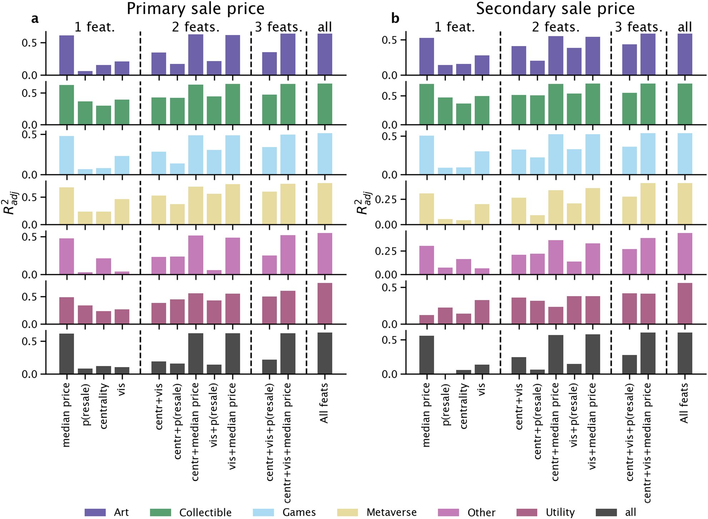

Matthieu Nadini 1, 2, Laura Alessandretti 3, Flavio Di Giacinto 1, 4, Mauro Martino 5, Luca Maria Aiello 6 & Andrea Baronchelli 1, 2, 7
Non Fungible Tokens (NFTs) are digital assets that represent objects like art, collectible, and in-game items. They are traded online, often with cryptocurrency, and are generally encoded within smart contracts on a blockchain. Public attention towards NFTs has exploded in 2021, when their market has experienced record sales, but little is known about the overall structure and evolution of its market. Here, we analyse data concerning 6.1 million trades of 4.7 million NFTs between June 23, 2017 and April 27, 2021, obtained primarily from Ethereum and WAX blockchains. First, we characterize statistical properties of the market. Second, we build the network of interactions, show that traders typically specialize on NFTs associated with similar objects and form tight clusters with other traders that exchange the same kind of objects. Third, we cluster objects associated to NFTs according to their visual features and show that collections contain visually homogeneous objects. Finally, we investigate the predictability of NFT sales using simple machine learning algorithms and find that sale history and, secondarily, visual features are good predictors for price. We anticipate that these findings will stimulate further research on NFT production, adoption, and trading in different contexts.
“WTF are NFTs? Why crypto is dominating the art market” is the title of the February 21, 2021 episode of The Art Newspaper podcast 1, signalling both the impact of Non Fungible Tokens (NFTs) on the art world and the novelty they represent for most of the general public. The revolution is not confined to the art market. While NFT adoption in gaming has already reached a certain maturity, for example concerning the trade of in-game objects, different other industries, especially those involved with the production of digital content such as music or video, are experimenting with the technology. Overall, in the first four months of 2021, the NFT volume has exceeded 2 billion USD, ten times more than the entire NFT trading volume in 2020 2.
So, what’s an NFT? An NFT is a unit of data stored on a blockchain that certifies a digital asset to be unique and therefore not interchangeable, while offering a unique digital certificate of ownership for the NFT3. More broadly, an NFT allows to establish the “provenance” of the assigned digital object, offering indisputable answers to such questions as who owns, previously owned, and created the NFT, as well as which of the many copies is the original. Several types of digital objects can be associated to an NFT including photos, videos, and audio. NFTs are now being used to commodify digital objects in different contexts, such as art, gaming, and sports collectibles. Originally NFTs were part of the Ethereum blockchain but increasingly more blockchains have implemented their own versions of NFTs 4.
The first popular example of NFTs is CryptoKitties, a collection of artistic images representing virtual cats that are used in a game on Ethereum that allows players to purchase, collect, breed, and sell them on Ethereum 5. In December 2017, CryptoKitties congested the Ethereum network 6. By many considered a chief example of the irrationality driving the cryptocurrency market in 2017 7, CryptoKitties remained the only popular example of NFTs for almost 2 years. In July 2020, the NFT market started to grow 2 and attracted a huge attention in March 2021, when the artist known as Beeple sold an NFT of his work for $69.3 million at Christie’s 8. The purchase resulted in the third-highest auction price achieved for a living artist, after Jeff Koons and David Hockney 9. Several other record sales followed 10, 11: three Cryptopunks—a collection of 10,000 unique automatically generated digital characters—were sold at $11.8, $7.6, and $7.6 million dollars, respectively; the first tweet was sold at $2.9 million dollars; and the Auction Winner Picks Name, an NFT with music video and dance track, sold at $1.33 million dollars. The profitability of NFTs has motivated celebrities to create their own NFTs, with collectibles of NBA and famous football players getting sold for hundreds of thousands dollars 12.
Research on NFTs is still limited, and focuses mostly on technical aspects, such as copyright regulations 3; components, protocols, standards, and desired properties 13; new blockchain-based protocols to trace physical goods 14; and the implications that NFTs have on the art world 15, 16, in particular as they allow to share secondary sale royalties with the artist. Empirical studies aiming at characterizing properties of the market have focused on a limited number of NFT collections, such as, CryptoKitties 17, 18, Cryptopunks, and Axie 19, or on a single NFT market, such as, Decentraland 19, 20 or SuperRare 21, 22. These analyses revealed that the digital abundance of NFTs in digital games has led to a substantial decrease of their value 17, and that, even if NFT prices are driven by the prices of cryptocurrencies 19, the NFT market could be prone to speculation 18, 20. Further, it was shown that NFTs valued by experts are more successful 21, and that, based on 16,000 NFTs sold on the SuperRare market, the structure of the the NFT co-ownership network is highly centralized, and small-world-like 22, 23.
In this paper, we provide a first comprehensive quantitative overview of the NFT market. To this end, we analyse a large dataset including 6.1 million trades of 4.7 million NFTs in 160 cryptocurrencies, primarly Ethereum and WAX, and covering the period between June 23, 2017 and April 27, 2021. We start by analysing the overall statistical properties of the NFT market and its evolution over time. Then, we study the network of interactions between NFT traders, and the network of NFT assets. NFTs are further clustered based on their visual features. Finally, we present the results of regression and classification models predicting the occurrence of NFT secondary sales and their price.
We break down our analysis by NFT categories, which are classified by manual inspection, with references to the classification proposed by NonFungible Corporation 24, a specialized company that track NFTs sales, and OpenSea 25, one of the largest NFT marketplace. However, the exact classification of different categories in which NFTs are used is outside of the scope of the present paper. For example, Art objects can be in some cases classified as Collectibles, while some Game objects may present sophisticated aesthetic and cultural properties that may qualify them as Art.
Following an initial rapid growth in late 2017, when CryptoKitties collection gained worldwide popularity, the size of the NFT market has remained substantially stable until mid 2020, with an average of ~ 60 000 US dollars traded daily (see Fig. 1b). Starting from July 2020, the market has experienced a dramatic growth, with the total volume exchanged daily surpassing ~ 10 million US dollars in March 2021, thus becoming 150 times larger than it was 8 months earlier.
We measured to what extent different NFTs categories contribute to the size of the whole NFT market. Until the end of 2018, the market was fully dominated by the Art category, and in particular by the CryptoKitties collection. From January 2019, other categories started gaining popularity, both in terms of total volume exchanged (see Fig. 1b, c) and number of transactions (see Fig. 1d). Overall, in the period between January 2019 and July 2020, ~ 90% of the total volume exchanged on NFT was shared by the Art, Games, and Metaverse categories, contributing 18% , 33% , and 39% respectively. Starting from mid July 2020, the market volume has been largely dominated by NFTs categorized as Art, which, since then, have contributed ~ 71% of the total transaction volume, followed by Collectible assets accounting for 12%. Importantly, however, the market composition is quite different when considering the number of transactions. Since July 2020, the most exchanged NFTs belong to the categories Games and Collectible, which account for 44% and 38% of transactions. Instead, only 10% of transactions are related to NFTs categorized as Art. Overall, we observe that the share of volume spent in Art has been growing since 2020, while its share of transactions has been decreasing (Fig. 1d). The discrepancy between volume and transactions reveals that prices of items categorized as Art are higher, on average, compared to other categories.
We dig further into these differences by looking at the distribution of NFT prices across categories (see Fig. 2a), which we find to be broadly distributed. We observe that the average sale price of NFTs is lower than 15 dollars for 75% of the assets, and larger than 1594 dollars, for 1% of the assets. Considering individual categories, NFTs categorized as Art, Metaverse, and Utility reached higher prices compared to other categories, with the top 1% of assets having average sale price higher than 6290, 9485, and 12,756 dollars respectively. Note that these categories are different in sizes, so 1% of assets corresponds to 8593, 472, and 78 NFTs in the Art, Metaverse, and Utility categories, respectively. The highest prices so far were reached by assets categorized as Art, with 4 NFTs that were sold for more than 1 million dollars.
To assess the market activity, we measured how often individual assets are traded. Here, we refer to the first time an asset is sold as the asset’s primary sale, and to all other sales as secondary sales. All assets considered in this study had a primary sale, but only ~ 20% of them had a secondary sale (see “SI”). We observe that the tail of the distribution of number of sales s per asset, for s >= 10 , is well characterized by a power-law function P(s) ~ s β , with β= −1.4 , estimated following 26 (see Fig. 2b). When looking at different categories, the distribution of number of sales is affected by cut-off values. For example, the maximum number of sales for assets in the Utility category is 12, while an asset in the Games category is sold more than a thousand times, and an asset in the Art category more than five thousands times. Note that only 0.07% of all assets are sold more than 10 times. Also, the size of collections n is well described by a power-law function P(n) ~ n α, with α = −1.5 (see Fig. 2c), implying the distribution of sizes is broad. We find that ~ 75% of collections comprise less than 37 unique assets, and ~ 1% have more than 10,400 unique assets.
Temporal patterns of secondary sales are unique for each collection, as evidenced by considering the top collection in each category (see Fig. 3). For example, when Cryptokitties emerged in 2017, secondary sale prices were typically lower than the price of their first sale. More recently in 2021, instead, their secondary sale prices have gone up because of an increase in the number of potential customers. Other collections, like Alien, alternated periods when secondary sale prices went down and period when they went up. In the Unstoppable collection secondary sales are rare because NFTs correspond to web domains secured by blockchain technology. In 2017, secondary sale price were lower than primary in 66% of the cases, while in 2021 only 27% of secondary sales had lower prices than the primary one.
Figure 1. Description of the NFT landscape. (a) Top 5 NFTs collections (by number of assets) organized by category. The size of each circle is proportional to the number of assets in each collection. (b) Daily volume (in USD) exchanged over time for each category and for all assets (see legend). Days with volume below 1000 USD are not shown. (c) Share of volume traded by category. (d) Share of transactions by category. Results in these panels are averaged over a rolling window of 30 days.
Figure 2. Statistical properties of the NFT market. (a) Distribution of the average price (USD) for all NFTs (top) and by NFT category (bottom). (b) Distribution of number of sales per NFT for all NFTs (top) and by category (bottom). The dashed line is a power law fit P(s) ~ s β, with β = −1.4 , where s is the number of sales. (c) Distribution of number of assets per collection for all NFTs (top) and by category (bottom). The dashed line is a power law fit P(n) ~ n α , with α = −1.5 , where n is the number of unique assets.
Figure 3. Secondary sale prices. Sales over time for the top collection in terms of number of sales in each NFT category (CryptoKitties, Stf.capcorn, Alien, Decentraland, Miscellanea, and Unstoppable). Each horizontal line represents an NFT and each dot a sale. Sales are coloured based on the change in price compared to previous sale (see colourbar).
First, we study the behaviour of individual NFT traders by focusing on properties of the nodes. We find that traders activity is highly heterogeneous: the strength of traders (nodes) s, defined as the total number of purchases and sales made by each trader, is distributed as a power law P(s) ~ s λ1 with exponent λ1 = −1.85 (see Fig. 4a), such that the top 10% of traders alone perform 85% of all transactions and trade at least once 97% of all assets. Further, we find a superlinear relation between the strength of a trader and the total number of days of activity d, with s ~ d λ2 and λ2 = 1.28 (see Fig. 4b). This result reveals that the average number of daily trades is larger for traders active over long periods of time. Traders are also specialized: measuring how individuals distribute their trades across collections, we find that traders perform at least 73% of their transactions in their top collection, while at least 82% in their top two collections combined. The relation between strength and specialization is not monotonic: the most specialized traders have either few (less than ten) or many (more than ten thousands) transactions (see Fig. 4c). A specialized trader is the one with Ethereum address “0xfc624f8f58db41bdb95aedee1de3c1cf047105f1”, that exchanges tens of thousands of CryptoKitties. Similar relationships hold when buying and selling behaviours are considered separately (see “SI”).
Secondly, we turn to properties of the network links, describing interactions between pairs of traders. We find that the distribution of link weights is well characterized by a power law distribution, with the top 10% of buyer–seller pairs contributing to the total number of transactions as much as the remaining 90% (see “SI”). An interesting question is whether traders connect preferentially to traders that have similar strength. We tackle this question by studying the assortativity coefficient r 28, that measures the correlation between the sum of the weights of all outgoing links (the outgoing strength) of a given node with the average sum of the weights of incoming links (the incoming strength) of its neighbours. We find that the assortativity, which takes value r = −0.024, 
Figure 4. Key network properties. (a) Pdf of the traders’ strength. (b) Traders’ strength as a function of the number of days of activity. (c) Percentage of transaction traders make toward their top and second-top NFT collections. (d) Pdf of the NFTs’ strength. (e) Percentage of transactions between NFTs in different collections as a function of the size of the collection. (f) Percentage of NFTs belonging to the first and second largest strong connected component (SCC). Solid curves in (b), (c), (e) and (f) represent average values, while respective bands the 95% confidence interval.
Finally, we focus on the network structure. Building upon the result that traders are specialized, we assign each trader to their top collection, and we study the modularity29 of the network under this partition of nodes. The modularity is a metric bounded between −0.5 and 1, which is positive when the density of links among nodes assigned to the same partition is larger than it would be expected by chance. We find that the modularity Q of the collections partition is Q = 0.613 , significantly higher than what expected from a random network Q = 0.0823 ± 0.0001 (see “SI”). It reveals that the collections well represent the underlining network structure, where traders specialized in a collection tends to buy and sell NFTs with other traders specialized in the same collection.
We now turn to the exploration of how NFTs are connected to one another. To this end, we construct the network of NFTs, where nodes are NFTs and a directed link exists between two NFTs that are purchased “in sequence”, e.g. a link is created from an NFT to another when a buyer purchases the former and then the latter, with no purchases between the two (see “SI” for more details). Rather than linking all NFTs ever traded by the same trader, this choice allows to understand the relations between NFT that are semantically similar, because they are bought by the same trader in approximately the same period of time. Further, it ensures that the network structure is not dominated by large cliques.
The distribution of NFTs strength decays as a power law with exponent λ3 = −3.21 (see Fig. 4d). Note that the strength of NFTs is different to the total number of sales per NFT (previously shown in Fig. 2b), due to how the network is constructed. In fact, when two NFTs are purchased simultaneously, this creates two links for each of the two nodes (one ingoing and one outgoing). The next question we ask is: which NFTs are connected to one another? We find that NFTs in small collections tend to be bought in sequence with NFTs in other collections (see Fig. 4e). On the contrary, NFTs in large collections, like CryptoKitties or Gods-Unchained, tend to be bought in sequence with NFTs in the same collection.
What are the implications of this behaviour on the NFT network structure? We investigate the relation between the structure of the NFT network and NFTs collections, by studying the modularity29 of the network under the partition of NFTs (nodes) into NFT collections. We find that the modularity Q of the collections partition is Q = 0.80 , significantly higher than what expected from a random network Q = 0.1110 ± 0.0001 . It reveals that (1) the network is clustered and (2) the collections well represent the underlining community structure. By further exploring the relationship between traders’ behaviour and NFT networks structure, we unveil that, while the NFT network is clustered, communities are not isolated. That is, some traders buy or sell assets belonging to multiple collections. The network of NFTs has two strongly connected components (SCC)30, defined as groups of nodes such that, starting from a given NFTs, it is possible to reach any other NFTs in the SCC following directed links. The largest SCC include NFTs traded in the WAX blockchain, consisting of 35% of all NFTs, while the second largest includes NFTs traded in the Ethereum blockchain, consisting of 20% of all NFTs (see Fig. 4f). While the high network modularity reveals that traders tend to purchase assets from the same collection in sequence, the presence of very large SCCs reveals that there are less frequent sequences of purchases in different collections.
A visual representation of the trader network including the Art category on February 2021 shows the clusters formed by NFT traders specialized in the same collection (see Fig. 5a). Similarly, the same visualization for the 
Figure 5. Networks visualization. (a) Trader network, where nodes represent traders and links sales between a pair of them. (b) NFT network, where nodes represent NFTs and links when a pair of NFTs is purchased in “sequence”. For visualization purposes, we selected the ten top collections in the Art category on February 2021. Visualization is done using Netwulf 31.
We then study the networks consisting of assets in the same category and blockchain (see “SI”). We find that key results presented above, including the shape of the strength distributions, hold across categories. Also in this case, we find that traders, independently from the category considered, are specialized: the fraction of individual trades in the top collection is included between 59%, for the Other category, and 98%, for the Utility category. Similarly, the fraction of individual trades in the top collection is 70% for the WAX blockchain and 91% for the Ethereum blockchain category. Relative to the number of total NFTs in each category, the WAX component contains 55.0% of all NFTs labeled as Collectible, but only the 0.06% of all NFTs labeled as Utility. On the contrary, the Ethereum component has the 54.8% of all Art, but only the 10.6% of Games.
The average CD calculated between items which belong to the same collection is significantly lower ( µ = 0.59 , σ = 0.20 ) compared to the one obtained for objects from two different collections ( µ = 0.87 , σ = 0.06 ), confirming an intra-collection graphical homogeneity. Figure 6a shows the matrix of average CD values between all pairs of collections. Values on the diagonal represent the intra-collection CD values, and reveal that most collections have a high degree of homogeneity (e.g., Sorare (CD = 0.24) or Cryptopunks (CD = 0.33)) but some are more heterogeneous (Rarible (CD = 0.89)). In short, many collections have their own style, graphical hallmarks that distinguish them from others. There are also sub-groups of collections, usually within the same category (coloured band in Fig. 6a), which share some common visual features. This is the case for collections containing pieces of pixel-art, including Chubbie, Cryptopunks and Wrapped Punks, or the similarities observed between Cryptokitties and Axie.
To map the images into a lower-dimensional feature space that can be used in practice for prediction and visualization, we apply Principal Component Analysis (PCA) to the AlexNet vectors. PCA uses linear combinations of the 4096-dimensional vectors to project them into vectors with an arbitrarily lower number of dimensions and such that the variance of datapoints in the projected space is maximized. Considering the whole sample, 
Figure 6. Visual features representation. (a) Cosine distance of graphical digital objects between items grouped by collections and categories (coloured bands on the right), recognising aesthetical similarities and uniformity between and within these groups. For visualization purposes, we selected the largest 98 collections in our dataset. (b) The dimensionality reduction of AlexNet vectors by PCA and their visualization in the PC1, PC2 and PC3 space, broken down by NFT categories, demonstrate the presence of graphically uniform clusters. For visualization purposes, we downsampled the digital objects associated with the CryptoKitties and Sorare collections, which alone constitute the 61% of the whole dataset.
NFT’s price correlates strongly with the price of NFTs previously sold within the same collection (see “SI”). The median sale price of NFTs in the collection predicts more than half of the variance of price of future primary and secondary sales. The prediction is more accurate when the median of the past sale price is calculated over a recent time window preceding the primary sale, e.g., the prior time window of one week is better than considering the entire time window preceding the NFT’s primary sale. Similar results, albeit with generally lower correlations, are found when the secondary sale price is the object of the regression (see “SI”). As one would expect, the price of secondary sales is strongly correlated with the price of primary sale, and the predictive power of the variables declines as one attempts to cast a prediction over longer periods of time: R 2adj = 0.90 when predicting the median secondary sale price over the next week, and falls to R 2adj = 0.77 when extending the prediction over the next 2 years (see “SI”). A similar relation is found between the secondary sale price and the median price of the NFTs collection (see “SI”).
Other features than prior sale history are predictive of future primary sale price (see Fig. 7a) and median secondary sale price (see Fig. 7b). Centrality measures of the buyer and seller in the trader network ( R 2adj ∈ [0.05, 0.12] ) and visual features of the object linked to the NFT ( R 2adj ∈ [0, 0.08] ) explain roughly one-fifth to one-fourth of the variance when used in combination ( R 2adj ∈ [0.18, 0.25] ). When considered in combination with the median price of previous sales, they increase the predictive power by almost 10% for the secondary sale price ( R 2adj from 0.55 to 0.6). When fitting separate regressions for each category, it becomes apparent that 
Figure 7. Regression results. R 2adj of a linear regression fit to predict the primary sale price (a) and the secondary price sale 1 month after the primary sale (b) from different sets of features. Results are broken down by NFT categories. The abbreviation “feat(s).” stands for “feature(s)”.
the predictability of future prices and the predictive power of different sets of features varies depending on the NFT category. The collectible category is the easiest to predict, with centrality and visual features yielding R 2adj ∈ [0.30, 0.36] and R 2adj ∈ [0.40, 0.50] , respectively. These two families of features have the largest compound effect in the Art category; in the secondary sale price prediction, centrality features boost the predictive power of visual features by more than 50%. Regression coefficients of individual features for the task of secondary sale price prediction one month after the primary sale are presented in Table 1.When predicting secondary sale prices, we consider only those NFTs that were sold in a secondary sale. These NFTs are the minority: less than 10% are sold at least once within one week after the primary sale, and only about 22% within 1 year (see “SI”). Using the same set of features that we selected for the price regression, we trained AdaBoost32, a binary classifier, to assess to what extent it is possible to predict whether an NFT will be sold after its primary sale (for more details see in “SI”). We find that this is possible to a certain extent. The prediction is most accurate when training and testing the classifier on Art NFTs only ( F1 > 0.8 ), whereas the prediction is less reliable for the other categories ( F1 ∈ [0.14, 0.33] , see “SI”). The median price of the collection is among the strongest predictors, but not always the strongest. The prior probability of sale in the collection is also a strong signal, and centrality and visual features combined can sometimes outperform other feature combinations (e.g., in the Metaverse category). Last, the prediction is most accurate when trying to predict the occurrence of a secondary sale over longer periods of time (see “SI”).
| Feature | β coefficients | ||||||
|---|---|---|---|---|---|---|---|
| All | Art | Collectible | Games | Metaverse | Utility | Other | |
| const. | −0.029 | 0.030 | −0.086 | −0.181 | 0.210 | 2.054 | 0.149 |
| kbuyer | −0.018 | 0.022 | −0.032 | −0.132 | −0.078 | −0.010• | −0.207 |
| kseller | −0.166 | −0.211 | 0.000 | 0.026 | 0.166 | 0.198• | −0.347 |
| PRbuyer | 0.129 | 0.077 | 0.162 | 0.317 | 0.206 | −0.241• | 0.336 |
| PRseller | 0.302 | 0.367 | −0.031 | −0.066 | 0.009• | −0.382 | 0.459 |
| presale | 0.029 | −0.041 | 0.079 | 0.023 | 0.046• | 0.465 | 0.251• |
| Medianprice | 0.769 | 0.711 | 0.970 | 0.815 | 0.436 | 0.478 | 0.687 |
| visPCA1 | 0.098 | 0.153 | 0.049 | 0.174 | 0.175 | −1.136 | 0.021 |
| visPCA2 | −0.120 | −0.130 | −0.044 | −0.064 | −0.669 | −0.817 | −0.181 |
| visPCA3 | 0.019 | 0.027 | 0.063 | 0.203 | 0.112• | −1.292 | −0.037• |
| visPCA4 | 0.040 | 0.028 | −0.003• | 0.130 | −0.018• | −0.911 | −0.116 |
| visPCA5 | 0.063 | 0.018 | 0.276 | 0.102 | 0.296 | 0.071• | 0.301 |
| #NFTs | 407,549 | 251,369 | 69,015 | 78,848 | 2693 | 314 | 5297 |
| #Collections | 3307 | 114 | 73 | 48 | 12 | 6 | 3054 |
| R 2adj | 0.6 | 0.589 | 0.709 | 0.535 | 0.408 | 0.562 | 0.44 |
Table 1. Secondary sale price prediction. Linear regressions to predict the NFTs’ median secondary sale price one month after their primary sale from three families of features: centrality on the trader network (k, PR), history of sales in the NFT’s collection (namely prior probability of secondary sale presale and median sale price 1 week before the sale medianprice), and visual features ( visPCAi ). Regression models were fit to different categories of NFTs independently. For each category, the number of NFTs and collections it contains is reported. The R 2adj is a measure of goodness of fit, and it quantifies the proportion of the data variance explained by the model. The p-values of all β coefficients are < 0.01 except for those marked with • , which are all > 0.05.
It is important to highlight the main limitations of our study, which represent also directions for future work. First, we gathered data from a variety of online NFT marketplaces and not directly from the Ethereum or WAX blockchains, so that we have likely missed a number of “independent” NFT producers. Second, we mostly adopted an accepted categorisation for the NFTs, which includes a number of arbitrary decisions and could however be further refined (as every categorization). Third, since our primary goal was to provide a general overview of the market, we did not extensively explore all the available methods e.g., for the features extraction from images33 and their clustering in a lower-dimensional space34, machine learning for price prediction35, or market modelling36. We also did not consider collective attention as measured e.g. from social media or Wikipedia, which can be a further source of information about market behaviour37–39. Fourth, we considered mostly the Ethereum and WAX blockchains, but several other platforms offer smart contracts and NFTs. Finally, our price prediction exercise did not include information about the creator of the (digital) object associated to the NFTs. While this is due mainly to the dataset, and in many cases the identity of the creator is not available or does not exist (e.g., for AI generated images), it is likely that in certain contexts, and specifically for art, this can be an important aspect to consider.
Overall, NFTs are a new tool that satisfies some of the needs of creators, users, and collectors of a large class of digital and non-digital objects. As such, they are probably here to stay or, at least, they represent a first step towards new tools to deal with property and provenance of such assets. We anticipate that our study will help accelerate new research on NFT in a broad array of disciplines, including economics, law, cultural evolution, art history, computational social science, and computer science. The results will also help practitioners make sense of a rapidly evolving landscape and inform the design of more efficient marketplaces as well as the associated regulation.
We group NFTs into six categories: Art consisting of digital artworks such as images, videos, or GIFs; Collectible representing items of interest to collectors; Games including digital object used in competitive games; Metaverse consisting of pieces of virtual worlds; Utility representing items having a specific function; and Other including the remaining collections. More details on the NFT categorization are explained in “SI”. The final, cleaned dataset includes 935 million USD traded in 6.1 million transactions involving 4.7 million NFTs grouped in 4624 collections. Our dataset includes transactions in 160 different cryptocurrencies with most of them made in WAX (52% of the total number of transactions), while the volume in USD is mostly ETH (81% of the total volume). We show general statistics of the categories of NFTs considered, involving a total of 359,561 buyers, 314,439 sellers, trading 4.7 millions NFTs involving 953 million USD in cryptocurrencies (see “SI”).
Data and scripts used to download from the different APIs are available at https:// osf. io/ wsnzr/? view_ only= 319a5 3cf1b f542b bbe53 8aba3 79165 37.
Received: 19 July 2021; Accepted: 29 September 2021
Published online: 22 October 2021
1. Ben Luke, A. S. & Stoilas, H. WTF are NFTs? Why crypto is dominating the Art market. (2021). https:// www. thear tnews paper. com/ podca st/ wtf- nfts. (Accessed 4 May 2021). (The Art Newspaper).
2. Team, N. Non-fungible tokens quarterly report Q1 2021. (2021). https:// nonfu ngible. com/ subsc ribe/ nft- report- q1- 2021. (Accessed 4 May 2021). (NonFungible Corporation).
3. Evans, T. M. Cryptokitties, cryptography, and copyright. AIPLA QJ 47, 219–247 (2019).
4. Lounge, T. W. Choosing the right blockchain for your NFT. (2020). https:// medium. com/ phant astic phant asma/ choos ing- theright- block chain- for- your- nft- d1df2 bebae 91. (Accessed 4 May 2021). (Medium).
5. Team, C. (2021). CryptoKitties: Collect and breed furrever friends. https:// www. crypt okitt ies. co/. (Accessed 4 May 2021). (Cryptokitties).
6. Wong, J. I. The Ethereum network is getting jammed up because people are rushing to buy cartoon cats on its blockchain. (2017). https:// qz. com/ 11458 33/ crypt okitt ies- is- causi ng- ether eum- netwo rk- conge stion/. (Accessed 4 May 2021). (Quartz).
7. Tepper, F. People have spent over \$1m buying virtual cats on the Ethereum blockchain. (2017). https:// techc runch. com/ 2017/ 12/ 03/ people- have- spent- over- 1m- buying- virtu al- cats- on- the- ether eum- block chain/. (Accessed 4 May 2021). (TechCrunch).
8. Riegelhaupt, R. Results: Beeple’s purely digital NFT-based work of Art achieves \$69.3 million at Christie’s. (2021). https:// www. chris ties. com/ about- us/ press- archi ve/ detai ls? Press Relea seID= 9970& lid=1. (Accessed 4 May 2021). (Christie’s Press Release).
9. Reyburn, S. JPG file sells for \$69 million, as “NFT mania” gathers pace. (2021). https:// www. nytim es. com/ 2021/ 03/ 11/ arts/ design/ nft- aucti on- chris ties- beeple. html. (Accessed 4 May 2021). (The New York Times).
10. Phillips, D. The 10 most expensive NFTs ever sold. (2021). https:// decry pt. co/ 62898/ the- 10- most- expen sive- nfts- ever- sold. (Accessed 20 May 2021). (Decrypt).
11. Howcroft, E. “Cryptopunk” NFT sells for \$11.8 million at Sotheby’s. (2021). https:// www. reute rs. com/ techn ology/ crypt opunknft- sells- 118- milli on- sothe bys- 2021- 06- 10/. (Accessed 25 June 2021). (Reuters).
12. Devlin, J. The “insane” money in trading collectible cards. (2021). https:// www. bbc. co. uk/ news/ busin ess- 56413 186. (Accessed 20 May 2021). (BBC).
13. Wang, Q., Li, R., Wang, Q. & Chen, S. Non-fungible token (NFT): Overview, evaluation, opportunities and challenges. arXiv preprint arXiv: 2105. 07447 (2021).
14. Westerkamp, M., Victor, F. & Küpper, A. Blockchain-based supply chain traceability: Token recipes model manufacturing processes. in 2018 IEEE International Conference on Internet of Things (iThings) and IEEE Green Computing and Communications (GreenCom) and IEEE Cyber, Physical and Social Computing (CPSCom) and IEEE Smart Data (SmartData), 1595–1602 (IEEE, 2018).
15. Whitaker, A. Art and blockchain: A primer, history, and taxonomy of blockchain use cases in the Arts. Artivate 8, 21–46 (2019).
16. van Haaften-Schick, L. & Whitaker, A. From the artist’s contract to the blockchain ledger: New forms of artists’ funding using NFTs, fractional equity, and resale royalties. Available at SSRN 3842210, https:// doi. org/ 10. 2139/ ssrn. 38422 10 (2021).
17. Serada, A., Sihvonen, T. & Harviainen, J. T. CryptoKitties and the new ludic economy: How blockchain introduces value, ownership, and scarcity in digital gaming. Games Culture 16, 457–480 (2021).
18. Sako, K., Matsuo, S. & Meier, S. Fairness in ERC token markets: A case study of CryptoKitties. arXiv preprint arXiv: 2102. 03721 (2021).
19. Dowling, M. Is non-fungible token pricing driven by cryptocurrencies? Finance Res. Lett. 102097, ISSN1544-6123. https:// doi. org/ 10. 1016/j. frl. 2021. 102097 (2021).
20. Dowling, M. Fertile land: Pricing non-fungible tokens. Finance Res. Lett. 102096, https:// doi. org/ 10. 1016/j. frl. 2021. 102096 (2021).
21. Franceschet, M. Art for space. J. Comput. Cultural Heritage (JOCCH) 13, 1–9 (2020).
22. Barabási, A.-L. The Art market often works in secret. Here’s a look inside. (2021). https:// www. nytim es. com/ 2021/ 05/ 07/ opini on/ nft- art- market. html. (Accessed 17 May 2021). (The New York Times).